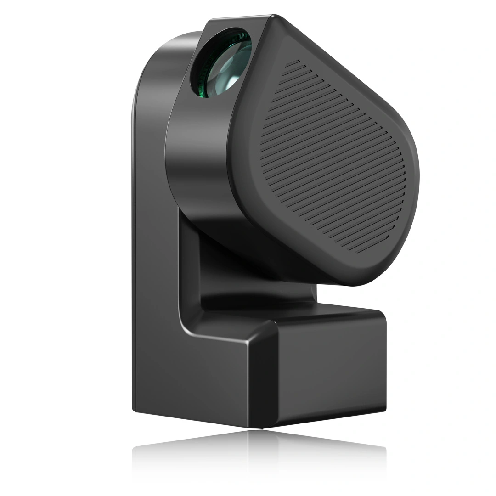

Seestar S50 - ZWO
O Seestar S50 é um telescópio inteligente “All-in-One” desenvolvido pela ZWO, projetado para simplificar a astrofotografia e a observação astronômica. Ele integra em um corpo compacto e leve (apenas 2,5 kg) um sistema óptico refrator apocromático, uma câmera astronômica, foco elétrico, uma montagem altazimutal motorizada, um computador de bordo (similar à funcionalidade do ASIAIR) e uma roda de filtros com um filtro de banda dupla (light pollution) e um filtro solar dedicado.
Seu design óptico é um triplete apocromático com 50 mm de abertura e 250 mm de distância focal, resultando em uma razão focal de f/5. Esta configuração é otimizada para astrofotografia de campo amplo de objetos do céu profundo, bem como para observação da Lua e do Sol (com o filtro solar incluso).
O telescópio é controlado inteiramente por um aplicativo dedicado (Seestar app) disponível para smartphones e tablets, que oferece funcionalidades como GoTo automático, rastreamento preciso, empilhamento de imagens ao vivo (live stacking), e plate solving. O aplicativo também inclui um banco de dados astronômico, recomendações de observação e funcionalidades de comunidade para compartilhar imagens.
Devido à sua facilidade de uso, portabilidade e recursos integrados, o Seestar S50 é uma excelente escolha para iniciantes em astrofotografia e para observadores que buscam uma solução prática e rápida para explorar o céu noturno e diurno (Sol).

Instalação e Configuração Inicial
A instalação e operação do Seestar S50 são guiadas principalmente pelo aplicativo Seestar. De forma resumida, o processo envolve:
Montagem Física:
- Retire o Seestar S50 e o tripé do estojo protetor. Atenção: o corpo do telescópio não possui alças e é um tanto escorregadio, por isso segure-o pelo corpo fixo do telescópio com firmeza e cuidado. Nunca segure, transporte ou puxe este telescópio pelo braço móvel (motorizado).
- Fixe o Seestar S50 no tripé utilizando a rosca padrão de 3/8 de polegada na base do telescópio. Certifique-se de que o tripé esteja nivelado.
Ligar e Conectar ao Aplicativo:
- Pressione e segure o botão de energia do Seestar S50 por aproximadamente 2 segundos para ligá-lo. Uma indicação sonora e luminosa confirmará que está ligado e pronto para conexão.
- Baixe e instale o aplicativo “Seestar” na loja de aplicativos do seu smartphone ou tablet.
- Ative o Bluetooth e o Wi-Fi no seu dispositivo móvel.
- Abra o aplicativo Seestar e siga as instruções para conectar-se ao telescópio. A primeira conexão geralmente envolve pareamento Bluetooth e, em seguida, conexão à rede Wi-Fi gerada pelo Seestar S50.
- Para o primeiro uso, o aplicativo guiará por um processo de ativação do dispositivo, que requer conexão à internet no seu smartphone/tablet.
Nivelamento e Calibração:
- O aplicativo possui uma ferramenta de nivelamento. Ajuste as pernas do tripé até que o indicador de nível no aplicativo mostre que o telescópio está corretamente nivelado. Um bom nivelamento é crucial para a precisão do GoTo e do rastreamento.
- O sistema GoTo do Seestar S50 geralmente se calibra automaticamente usando plate solving após o apontamento inicial para o céu.
Observação e Astrofotografia:
- Seleção de Alvo: Use o atlas celeste, as recomendações ou a busca no aplicativo para selecionar um objeto celeste.
- GoTo: Toque no objeto desejado e o telescópio se moverá automaticamente para apontar para ele.
- Foco: O S50 possui autofoco, que pode ser ativado pelo aplicativo. Ajustes finos manuais também podem ser possíveis.
- Filtros:
- Para objetos do céu profundo em áreas com poluição luminosa, ative o filtro de banda dupla (LP filter) no aplicativo.
- Para observação solar: Certifique-se de que o filtro solar dedicado (branco, geralmente com encaixe magnético ou de rosca) esteja CORRETAMENTE E FIRMEMENTE instalado na frente da lente ANTES de apontar o telescópio para o Sol. Selecione o modo “Solar” no aplicativo. NUNCA observe o Sol sem o filtro solar apropriado.
- Captura de Imagens: Inicie o modo de captura no aplicativo. Para objetos do céu profundo, o Seestar S50 utiliza o empilhamento ao vivo (live stacking) para progressivamente melhorar a qualidade da imagem ao longo do tempo.
Desligar e Guardar
- Ao final da sessão, feche o aplicativo e desligue o Seestar S50 pressionando e segurando o botão de energia.
- Desmonte o telescópio do tripé e guarde-os no estojo de proteção para evitar poeira e danos.
Consulte o manual do usuário completo fornecido pela ZWO para instruções detalhadas, dicas de solução de problemas e informações de segurança.
Extraídas do manual do usuário ZWO Seestar S50
Informações do Tubo Óptico e Sistema Integrado
- Design Óptico: Refrator Apocromático Triplete
- Abertura: 50 mm
- Comprimento Focal: 250 mm
- Razão Focal: f/5
- Sensor da Câmera: IMX462
- Resolução da Câmera: 1920 x 1080 pixels (Full HD)
- Foco: Elétrico, com capacidade de autofoco
- Filtros Integrados:
- Filtro de banda dupla para poluição luminosa (OIII 30nm / H-alfa 20nm), selecionável via app
- Filtro Solar dedicado (para observação da fotosfera solar), de encaixe frontal
- Armazenamento Interno: 64 GB
- Peso (unidade principal): 2,5 kg
- Dimensões (unidade principal): 142,5 mm (L) x 130 mm (P) x 257 mm (A)
- Temperatura de Operação: -10°C a 40°C
- Aquecedor de Orvalho (Dew Heater): Integrado, controlável via app
Informações da Montagem e Controle
- Tipo de Montagem: Altazimutal Motorizada Computadorizada
- Sistema GoTo: Sim, controlado por aplicativo com plate solving automático
- Rastreamento: Sim, altazimutal com correção de rotação de campo para exposições curtas e médias (via live stacking)
- Conectividade:
- Wi-Fi (2.4G/5G) para comunicação com o aplicativo
- Bluetooth para conexão inicial e alguns controles
- Porta USB-C (para carregamento da bateria e transferência de dados)
- Bateria: Interna recarregável de Íons de Lítio, 6000 mAh (aproximadamente 6 horas de uso, dependendo das condições)
- Tripé:
- Incluso: pequeno tripé de mesa/campo (altura máx. 363mm)
- Conexão: Rosca padrão de 3/8 de polegada (compatível com a maioria dos tripés fotográficos)
- Armazenamento:
- Estojo EPP Shockproof Case
- Recursos Adicionais do Aplicativo:
- Banco de dados astronômico com informações sobre objetos
- Atlas celeste interativo
- Recomendações de “Melhores objetos para esta noite”
- Modo de fotografia para paisagens (Scenery Mode)
- Compartilhamento de imagens e integração com comunidade online Seestar/ZWO
Manual do usuário
O Manual do usuário ZWO Seestar S50, contém as informações mais importantes e básicas do equipamento. Deve ser a primeira leitura do inciante com o equipamento.
Tutoriais web completo Seestar
Os Tutoriais Web do software Seestar cobrem aspectos mais práticos e funcionalidades específicas do aplicativo Seestar. Eles são um excelente complemento para quem quer se aprofundar no uso do seu telescópio.
Eis um resumo dos conteúdos cobertos pelos tutoriais:
- Captura de “Flats” (Flat Shoot):
- Aprenda a tirar fotos de calibração chamadas “flats”. Elas ajudam a remover imperfeições do seu sistema óptico (como poeira ou vinhetas) das suas astrofotos finais.
- Modo de Montagem Equatorial (Equatorial Mount Mode):
- Entenda como configurar e usar o Seestar em um modo que simula uma montagem equatorial, útil para exposições mais longas e melhor rastreamento. O manual descreve a montagem altazimutal padrão. Este tutorial explora uma capacidade adicional para usuários mais avançados.
- Observação Simulada (Simulated Stargazing):
- Descubra como usar o aplicativo para explorar o céu virtualmente, mesmo quando não está observando ao vivo. Ótimo para planejar suas sessões. O manual foca na operação real; este é um recurso do app para planejamento e aprendizado.
- Como Fotografar Objetos do Céu Profundo (Galáxias e Nebulosas):
- Um guia prático focado especificamente na captura de objetos difíceis como galáxias e nebulosas. O manual introduz o modo “Stargazing”; este tutorial aprofunda nas técnicas para alvos específicos.
- Adicionando Objetos Celestes Personalizados (Adding Custom Celestial Objects):
- Aprenda a inserir coordenadas ou nomes de objetos que não estão no banco de dados padrão do aplicativo. Expande a funcionalidade de busca de objetos do app.
- Redução de Ruído com Inteligência Artificial (AI Denoise):
- Explore a ferramenta de IA do aplicativo para melhorar a qualidade das suas imagens, reduzindo o ruído digital. Detalha uma função específica de processamento de imagem dentro do app.
- Enquadramento de Estrelas (Star Framing):
- Dicas e técnicas para compor melhor suas astrofotos, ajustando o enquadramento dos objetos celestes.
- Conhecendo o Aplicativo Seestar (Get to Know the Seestar App):
- Um tour geral pelas funcionalidades e interface do aplicativo Seestar.
- Os Modos de Captura (The Shooting Modes):
- Uma explicação dos diferentes modos de fotografia/observação disponíveis no aplicativo (Stargazing, Solar, Lunar, Scenery).
- Verificar o Nível de Poluição Luminosa (Query the level of light pollution):
- Como usar o aplicativo para obter uma estimativa do nível de poluição luminosa no seu local de observação. Uma ferramenta útil do app para planejar suas observações.
- Reportar Erros e Enviar Logs (Report Bug & Log):
- Instruções sobre como relatar problemas técnicos para a ZWO e enviar arquivos de log que ajudam no diagnóstico. Importante para suporte técnico, algo que o manual geral não cobre em profundidade.
- Transferir Arquivos por Wi-Fi (Transfer Files Using Wi-Fi):
- Como mover suas fotos e vídeos do Seestar para o seu computador ou celular usando a conexão Wi-Fi. O manual menciona a conexão Wi-Fi; este detalha a transferência de arquivos.
- Espelhar (Transmitir) usando Modo Estação (Mirror using Station Mode):
- Como conectar o Seestar à sua rede Wi-Fi doméstica (Modo Estação) para, por exemplo, transmitir a imagem para outros dispositivos ou ter um alcance maior. Explora uma configuração de rede mais avançada.
- Ativar o Foco Manual (Turn On Manual Focus):
- Como desativar o autofoco e ajustar o foco manualmente através do aplicativo, útil em certas situações. Detalha uma opção de controle de foco.
- Acessar a Internet Durante a Captura (Access the Internet while Filming):
- Explica como manter seu celular/tablet conectado à internet enquanto também está conectado ao Wi-Fi do Seestar (pode envolver configurações de “Modo Estação” ou uso de dados móveis). Resolve uma dúvida comum sobre conectividade.
- Obter Endereço RTSP (Get RTSP Address):
- Para usuários avançados, como obter o endereço de streaming de vídeo (RTSP) do Seestar para visualização em outros aplicativos ou softwares. Uma funcionalidade técnica específica.
- [S50] Ajustar Níveis Rapidamente (Nivelamento) ([S50]Quickly Adjust Levels):
- Dicas e truques para usar a função de nivelamento do S50 de forma eficiente. O manual na página 17 mostra essa tela. Foca na usabilidade prática de uma função já mencionada.
- Salvar Cada Quadro Durante o Aprimoramento (Empilhamento) (Save Each Frame in Enhancing):
- Como configurar o Seestar para salvar individualmente cada foto (“subframe”) que compõe a imagem final empilhada. Útil para processamento posterior em software especializado. Uma opção avançada para astrofotógrafos que querem mais controle no pós-processamento.
- Definir Tempo de Exposição para Aprimoramento (Set Enhance Exposure Time):
- Como ajustar o tempo de exposição de cada quadro individual durante o processo de empilhamento ao vivo (Enhance Mode). Controle fino sobre o processo de captura de imagem.
- Empilhamento de Imagens do Céu Profundo (Deep Sky Stack):
- Uma explicação mais detalhada de como funciona o processo de empilhamento (stacking) no Seestar para objetos do céu profundo e como otimizá-lo. Aprofunda no principal método de captura para nebulosas e galáxias.
- Local de Armazenamento dos Arquivos (File Storage Location):
- Informações sobre onde as imagens e vídeos são salvos no armazenamento interno do Seestar e como acessá-los. Esclarece a organização dos arquivos no dispositivo.
- [S50] Encontrar o Sol Manualmente ([S50]Find the Sun Manually):
- Como apontar o Seestar S50 para o Sol de forma manual, caso o GoTo automático para o Sol não funcione ou você prefira um ajuste fino. Sempre com o filtro solar corretamente instalado! Uma alternativa ao GoTo para observação solar.
- [S50] Encontrar a Lua com Precisão ([S50]Find the moon accurately):
- Dicas para garantir que o GoTo para a Lua seja o mais preciso possível, ou como fazer ajustes finos manuais. Melhora a experiência de observação lunar.
- Função de Sincronização com o SkyAtlas (Atlas Celestial) (SkyAtlas Sync function):
- Quando o Seestar realiza um GoTo com sucesso e o objeto celeste está bem centralizado na tela, o sistema pode realizar uma sincronização automática. No entanto, este tutorial mostra como ativar e usar a função de sincronização manual (localizada nas configurações avançadas do Seestar dentro do app). Ao confirmar que um objeto conhecido está perfeitamente centralizado, você pode “sincronizar” manualmente, informando ao sistema a posição correta e melhorando a precisão de todos os futuros GoTos naquela sessão.
- [S50] Calibração do Sensor de Nível ([S50]Level sensor calibration):
- Vídeo de como calibrar o sensor interno de nível do Seestar S50, caso você perceba que as leituras de nivelamento estão incorretas. Manutenção da precisão do sistema de nivelamento.